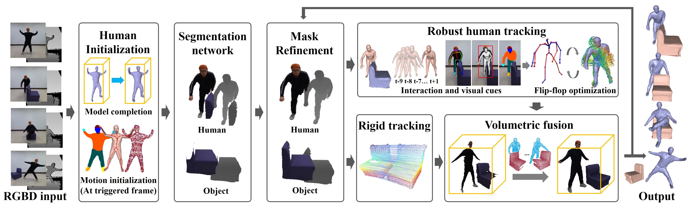
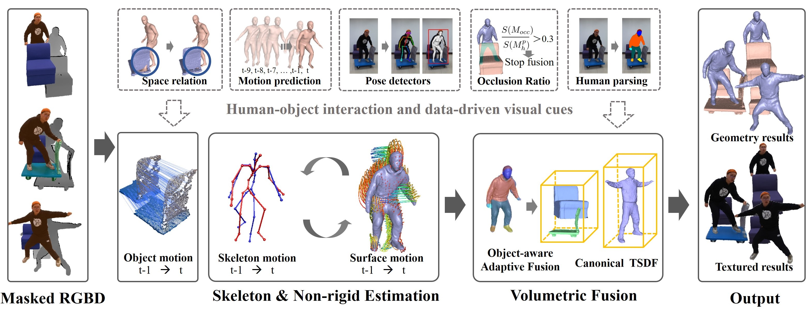

TPAMI 2021 Under Review
RobustFusion: Robust Volumetric Performance Reconstruction under Human-object Interactions from Monocular RGBD Stream
Zhuo Su1, Lan Xu1,2, Dawei Zhong1, Zhong Li3, Fan Deng3, Shuxue Quan3,Lu Fang1
1 Tsinghua University 2 Shanghaitech University 3 OPPO US Research Center
Abstract
High-quality 4D reconstruction of human performance with complex interactions to various objects is essential in real-world scenarios, which enables numerous immersive VR/AR applications. However, recent advances still fail to provide reliable performance reconstruction, suffering from challenging interaction patterns and severe occlusions, especially for the monocular setting. To fill this gap, in this paper, we propose RobustFusion, a robust volumetric performance reconstruction system for human-object interaction scenarios using only a single RGBD sensor, which combines various data-driven visual and interaction cues to handle the complex interaction patterns and severe occlusions. We propose a semantic-aware scene decoupling scheme to model the occlusions explicitly, with a segmentation refinement and robust object tracking to prevent disentanglement uncertainty and maintain temporal consistency. We further introduce a robust performance capture scheme with the aid of various data-driven cues, which not only enables re-initialization ability, but also models the complex human-object interaction patterns in a data-driven manner. To this end, we introduce a spatial relation prior to prevent implausible intersections, as well as data-driven interaction cues to maintain natural motions, especially for those regions under severe human-object occlusions. We also adopt an adaptive fusion scheme for temporally coherent human-object reconstruction with occlusion analysis and human parsing cue. Extensive experiments demonstrate the effectiveness of our approach to achieve high-quality 4D human performance reconstruction under complex human-object interactions whilst still maintaining the lightweight monocular setting.
|  |
|---|
Fig. 1 Pipeline of our method.
|  |
|---|
Fig. 2 Pipeline of our robust performance capture.
Results
 |
|---|
Fig. 3 Example results reconstructed by our method.
Demo video
Paper
[PDF]